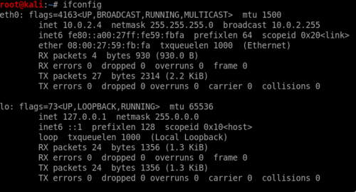
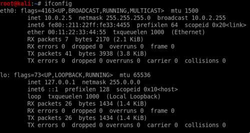

Study notes are my personal research notes on certain topics that interests me.
Any network capable device has a unique factory-assigned Media Access Control (MAC) address. Users have no way to change the MAC address but it can be done. However, it is possible to mask the MAC address and have it show a different value. This is called MAC spoofing.
There are legitimate uses for MAC spoofing. For example, there may be certain applications that require a particular MAC address to work, or maybe your ISP expects a certain MAC address to connect to the network. MAC spoofing is largely used for illegitimate uses, like circumventing an access control list or getting past a filter on a wireless network.
Changing MAC Address via ifconfig
In Linux we could use ifconfig to change the MAC address.
To view the current MAC address:
$ ifconfig
The current MAC address is 08:00:27:59:fb:fa:

Let's say we want to change the MAC address of our interface (eth0) to 00:11:22:33:44:55.
First, deactivate the interface.
$ ifconfig eth0 down
Then we specify the mac address that we want to change to.
$ ifconfig eth0 hw ether 00:11:22:33:44:55
Reactive the interface:
$ ifconfig eth0 up
Run ifconfig again to see the changes.

NOTE:
These changes are not permanent. The MAC address will return to the original one when the system is restarted!
Changing the MAC address via MACChanger
There are various tools that allows easy changing of MAC addresses. MACChanger is one of them.
First, deactivate the interface.
$ ifconfig eth0 down
The above below allows you specify the mac address you want to use:
$ macchanger -m 00:11:22:33:44:55 eth0
The code below assigns a random MAC address.
$ macchanger -r eth0
Reactive the interface:
$ ifconfig eth0 up